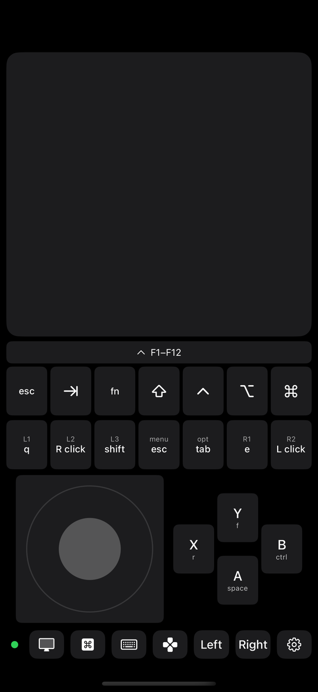
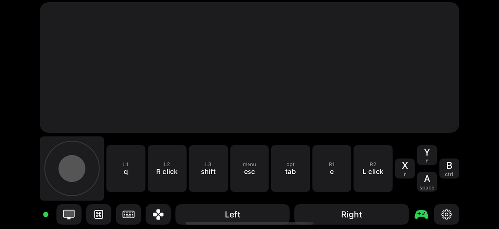

The on-screen controller
A hand-held console under the picture
Tap the d-pad button in the bar and the bottom of the phone turns into a controller: a stick for your left thumb, four face buttons for your right, and a row of keys you choose. The computer gets ordinary key presses and mouse clicks, so it works with any game that takes keyboard and mouse, on a Mac or a PC.


Turn it on
- Connect to your computer as usual. The d-pad button shows up in the bar once the phone is connected.
- Tap the d-pad button (or gear → Controller → "On-screen controller"). Tap it again to put the pad away.
- Pick a preset in gear → Controller → Bindings, or keep FPS, the default.
The layout
- Stick, on the left. Eight directions: up, down, left, right and the diagonals between them, which press two keys at once (W and D together, say). Push past a little dead zone and the direction's keys go down; let go and they come up.
- A B X Y, on the right, in a tight diamond the thumb covers without stretching. Each shows its letter and, under it, what it does.
- Seven programmable keys above them. They are the pad's L1, L2, L3, menu, options, R1 and R2, and each one is labelled with what it is bound to (q, right click, shift…) with the pad's name in small print.
- Keys behave like keys. Down while your finger is on them, up when it lifts, so holding to run or charge works. A finger can slide from one key to the next without lifting. Every press gives a light tap of haptics.
- Aim with the picture. The picture or trackpad above the pad still moves the mouse, sent as raw motion, which is what games use for camera look.
The key row and the keyboard
- The key row sits above the pad, on by default; the ⌘ button in the bar hides and shows it. An F1–F12 bar, then esc, tab, fn, ⇧ ⌃ ⌥ ⌘. The F1–F12 bar swaps the row for two rows of function keys; while a modifier is held it also shows Release. Modifiers stay held until tapped again, so ⌘Q or ⌥Tab work from the couch. With the pad off, the same row sits under the picture or trackpad instead.
- The keyboard button in the bar swaps the pad for the iOS keyboard, for typing a name or a chat line. The key row, when on, stays above the keyboard. Tap the button again and the pad comes back.
- Arrows and space come from the pad's bindings (the Arrows and MapleStory presets put the arrows on the stick) or from the iOS keyboard. The old strip of arrow keys is gone.
Presets and bindings
Gear → Controller → Bindings lists every control: the stick's four directions, the buttons, bumpers, triggers, stick clicks and menu buttons. Start from a preset, then change anything; a changed preset becomes "Custom". Every control can be any keyboard key (letters, numbers, F keys, arrows, modifiers, symbols), a left click, a right click, or nothing. A key bound to nothing is dimmed on the pad.
| FPS | Stick is WASD. A space, B ctrl, X r, Y f. L1 q, R1 e, L2 right click (aim), R2 left click (fire), L3 shift, menu esc, options tab. The default. |
|---|---|
| MapleStory | Stick is the arrows. A alt (jump), B ctrl (attack), X z (pick up), Y x. L1 a, R1 s, L2 shift, R2 space, menu esc, options enter. |
| Arrows | Stick is the arrows. A enter, B esc, X space, Y tab. L1 [, R1 ], L2 right click, R2 left click. For menus, launchers and 2D games. |
Upright, sideways, half open
- Upright the pad takes the bottom half of the screen and the picture or trackpad the top half, like a hand-held console, with the key row at the top of the pad.
- Sideways it is a short band under the picture: the stick at the left end, the seven keys in the middle, the diamond at the right end, so your thumbs sit in the bottom corners. The key row sits in the middle, above the seven keys.
- iPhone Duo, half open with the picture on: the picture sits on the upright half and the pad fills the flat half, like a clamshell console.

Which games
Anything that plays with keyboard and mouse, which on a Mac is nearly everything, and on a PC most things. The computer never sees a gamepad: macOS has no public way to create a virtual one, so Couchpad sends what the game already understands. Games that only accept a gamepad won't respond. Works with Mac and Windows hosts alike, picture or no picture.
A real controller works too
Plug a Backbone into the phone or pair a Bluetooth controller (PlayStation, Xbox, and so on) with it, and Couchpad forwards it the same way, with the same bindings: one profile drives both. The bindings screen shows the controller's own button names once one is connected, and the right stick moves the mouse for camera look (speed and invert in gear → Controller). The on-screen pad can stay on next to it or be put away.